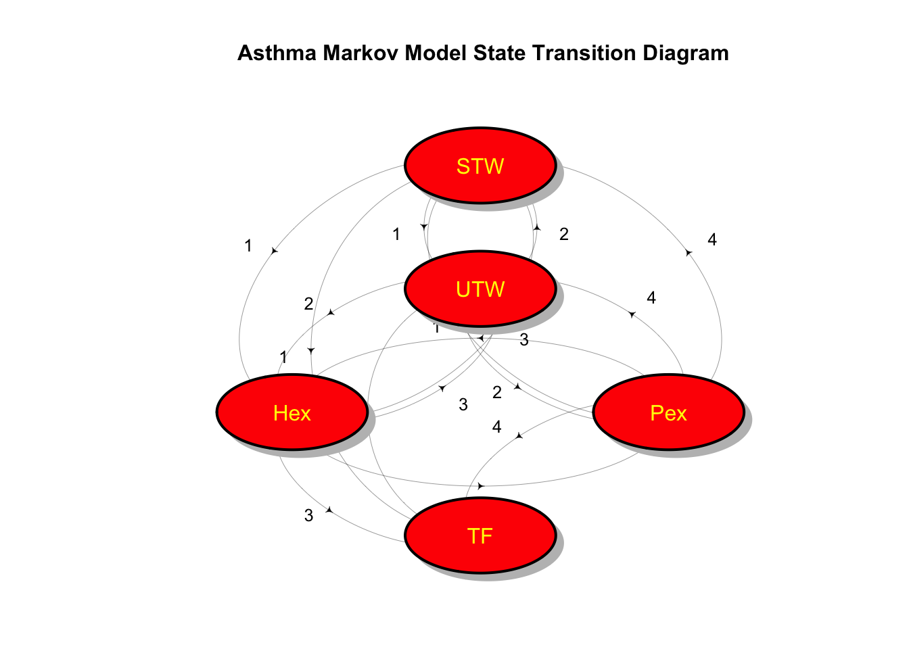
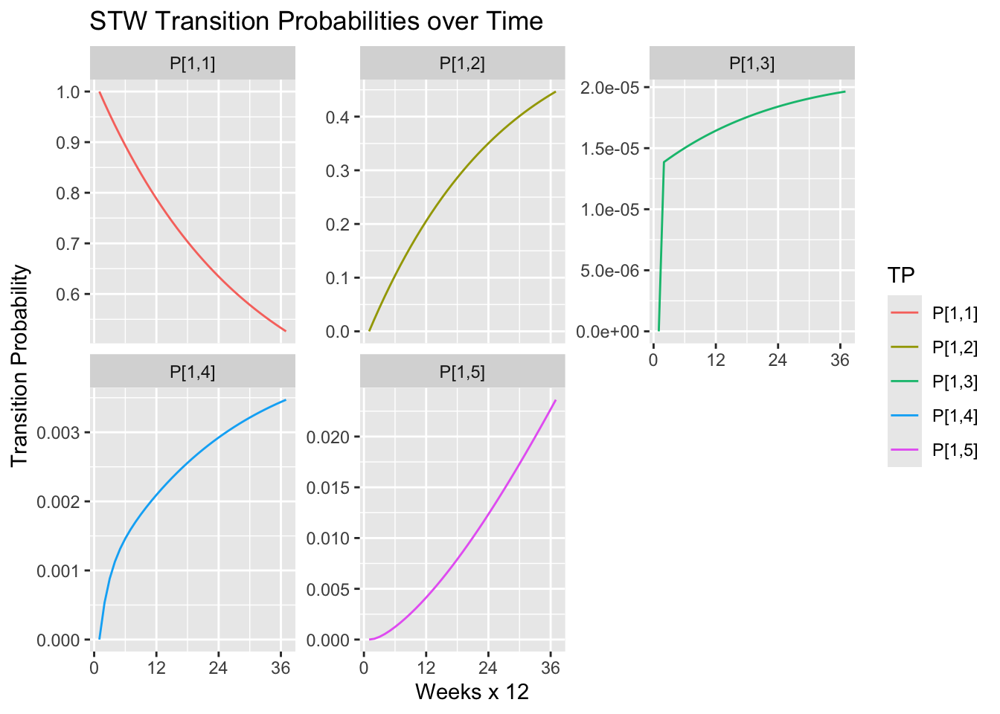
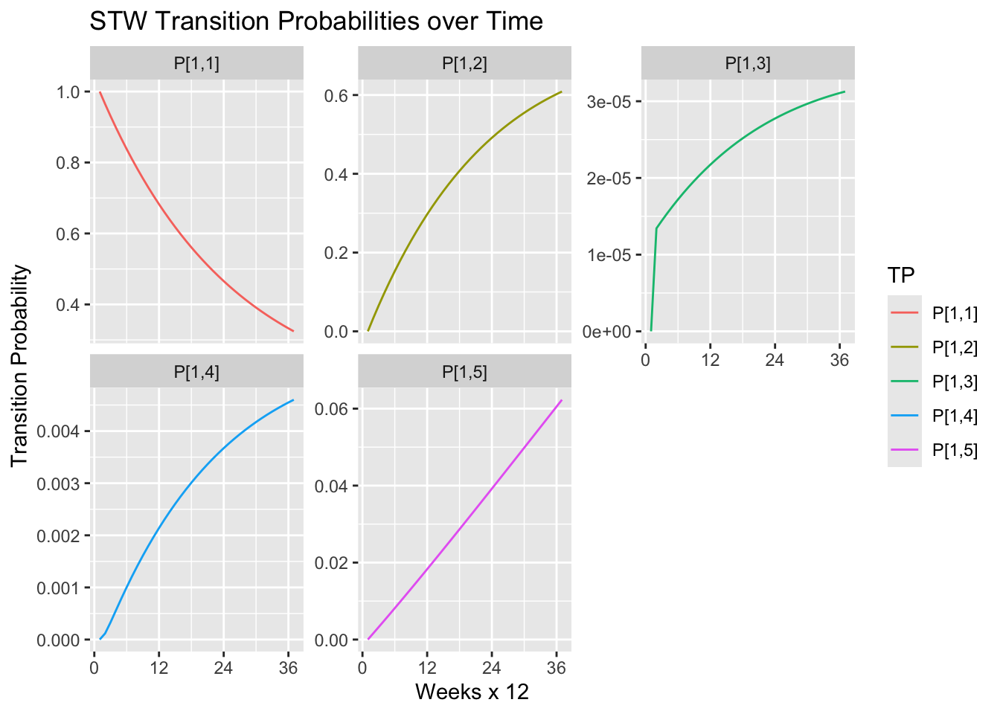
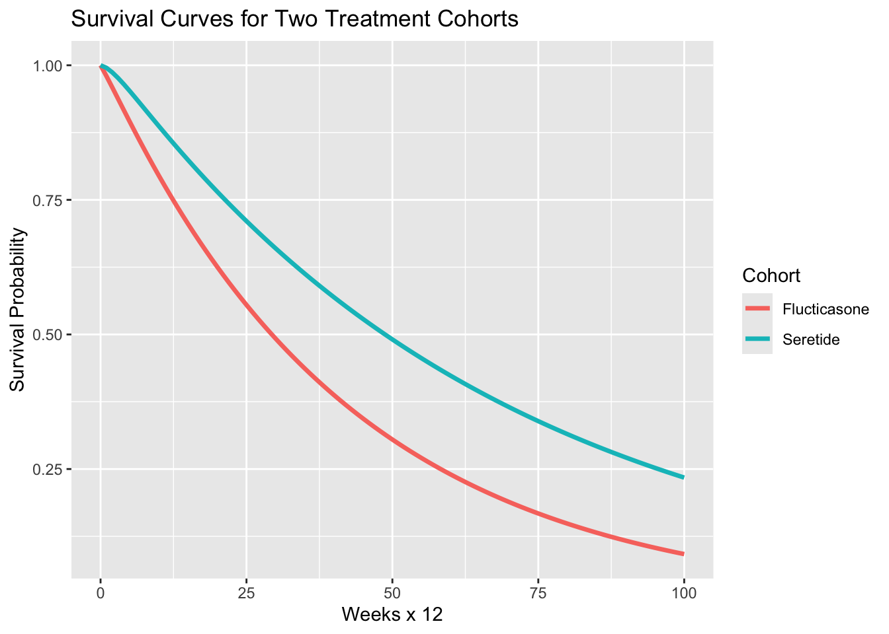

Estimating Continuous Time Markov Chains from Incomplete Data: Be mindful of the time
In a previous post, A Simple Bayesian Multi-state Survival Model for a Clinical Trial, I elaborated on a textbook example of a discrete time Markov Chain model to analyze data for two treatments from a multi-arm clinical trial. In this post, I extend the analysis by fitting a Continuous Time Markov model to the same minimalist data set using a likelihood based approach. The continuous time model uses a clever EM algorithm to estimate the generator matrix for the continuous time Markov chain from the same limited state table data used to build the discrete time model. The continuous time model highlights the importance of explicitly accounting for time in modeling real world processes.
The continuous time Markov model is a 5-state, absorbing Markov chain where patients move through various health states as they undergo treatment for asthma. The states are defined as follows: STW= successfully treated week, UTW= unsuccessfully treated week, Hex= hospital-managed exacerbation ,Pex= primary care-managed exacerbation, and TF= treatment failure. The state diagram is shown below.
It’s A Matter of Time
Before getting into the analysis itself, let’s review some of the salient differences between discrete time and continuous time Markov models. The choice between the two approaches hinges on how much the available can tell you about time.
A discrete time Markov chain (DTMC) models only the most primitive notion of time. The process starts in some state and then at the next time step, the process either stays in the same state or jumps to another state according to a according to a matrix of transition probabilities that do not vary with time. The mathematical model assumes that the time interval between transitions is fixed and equal to one time unit. Hence, using a DTMC to model a real world process requires that the modeler choose a time step interval that is appropriate for the process being modeled. The time interval could be any regular interval that is consistent with the development of the real world process being modeled. For example, when modeling the progression of a disease, the time interval must be on a scale that is appropriate for the biology of disease progression and reflects the with which data are collected.
A DTMC model is fully specified when the transition probability matrix \(P\) is given or estimated. Each element \(p_{ij}\) of \(P\) gives the probability of transitioning from state \(i\) to state \(j\) in one time step. The transition probability matrix for multiple time steps may be computed by raising the one-step transition matrix to the appropriate power. For example, if the time step interval is one week, then the three-week transition probability matrix is given by \(P^3\). So that while time does not generally explicitly enter into the process of estimating the \(P\) matrix, the time interval is implicitly defined by the frequency of data collection. Developing a useful DTMC model requires verifying that model predictions compare well with the observed progress of the real world process being modeled. For a disease progression model this would mean comparing state transitions over time to the to actual transitions observed in a cohort of patients.
In contrast to a DTMC, a continuous time Markov chain (CTMC) explicitly models the time between transitions as exponentially distributed random variables with rates determined by the generator matrix, \(Q\). The elements \(q_{ij}\) of \(Q\) give the instantaneous rate of transitioning from state \(i\) to state \(j\). The time spent in state \(i\) before transitioning to another state is also exponentially distributed. In a CTMC model the rates are fixed and do not vary with time, but the transition probabilities do vary with time. The time-dependent transition probability matrix \(P(t)\) may be computed from \(Q\) by solving the Kolomogorov differential equations. (See below.) For any time interval \(t\), the probabilities of transitioning from state \(i\) to state \(j\) may be computed by matrix exponential: \(P(t) = e^{Qt}\).
Unlike a DTMC model, a CTMC model explicitly allows for states to change at random intervals determined by transition rates that are unique to each state. So while time interval are random, it may not be apparent that the overall time scale is set by the data used to estimate the \(Q\) matrix. We will see how this plays out in the analysis below.
Also note that the Appendix below provides some of the relevant background on CTMCs.
Preliminaries
These two sections of code load the required R packages and define a helper function to compute the transition probability matrix for a 5-state CTMC over a sequence of time points.
R Packages
library('dplyr')
library('ggplot2')
library('stringr')
library('tidyverse')
library('matrixcalc')
library('expm') # for matrix exponentiation
library('ctmcd') # for continuous-time Markov chain models
library('diagram')Helper Functions
# This function computes the transition probability matrix for a 5-state CTMC. It results in a matrix with one row for each time step and 20 columns for the transitions probabilities for the four transient states.
TP5 <- function(Q, Time){
if (dim(Q)[1]*dim(Q)[2] != 25){stop("Matrix 'Q' must be 5 x 5.")}
TP <- matrix(0, nrow=length(Time), ncol=20)
for (t in 1:length(Time)){
P <- expm(Q * Time[t])
TP[t,1] <- P[1,1]
TP[t,2] <- P[1,2]
TP[t,3] <- P[1,3]
TP[t,4] <- P[1,4]
TP[t,5] <- P[1,5]
TP[t,6] <- P[2,1]
TP[t,7] <- P[2,2]
TP[t,8] <- P[2,3]
TP[t,9] <- P[2,4]
TP[t,10] <- P[2,5]
TP[t,11] <- P[3,1]
TP[t,12] <- P[3,2]
TP[t,13] <- P[3,3]
TP[t,14] <- P[3,4]
TP[t,15] <- P[3,5]
TP[t,16] <- P[4,1]
TP[t,17] <- P[2,2]
TP[t,18] <- P[4,3]
TP[t,19] <- P[4,4]
TP[t,20] <- P[4,5]
}
return(list(TP,Time))
}The Data
The data for the model comes from the clinical trial conducted by Kavuru et al. (2000) comparing multiple treatments for asthma management. As in the previous post, I follow Welton et al. and confine the analysis to comparing the two treatments Seretide and Flucticasone. These data, which are reproduced in in Welton et al., are just state tables that give the aggregate number of state transition observed over the course of 12 weeks. Data of this sort is sometimes described as “incomplete discrete data” because it does not provide the complete continuous time history of each patient. Instead, the data only give the number of patients in each state at the beginning and end of the 12 week period.
Data Code
states <- c(
"STW" = "sucessfully treated week",
"UTW" = "unsucessfully treated week",
"Hex" = "hospital-managed exacerbation",
"Pex" = "primary care-managed exacerbation",
"TF" = "treatment failure"
)
treatments <- c("Seretide", "Fluticasone")
s_state <- matrix(
c(
210, 60, 0, 1, 1,
88, 641, 0, 4, 13,
0, 0, 0, 0, 0,
1, 0, 0, 0, 1,
0, 0, 0, 0, 81
),
nrow = 5, byrow = TRUE,
dimnames = list(names(states), names(states))
)
f_state <- matrix(
c(
66, 32, 0, 0, 2,
42, 752, 0, 5, 20,
0, 0, 0, 0, 0,
0, 4, 0, 1, 0,
0, 0, 0, 0, 156
),
nrow = 5, byrow = TRUE,
dimnames = list(names(states), names(states))
)Seretide Transitions
s_state STW UTW Hex Pex TF
STW 210 60 0 1 1
UTW 88 641 0 4 13
Hex 0 0 0 0 0
Pex 1 0 0 0 1
TF 0 0 0 0 81Flucticasone Transitions
f_state STW UTW Hex Pex TF
STW 66 32 0 0 2
UTW 42 752 0 5 20
Hex 0 0 0 0 0
Pex 0 4 0 1 0
TF 0 0 0 0 156The Likelihood Solution
The model below uses the EM algorithm developed by Bladt and Sørensen (2005), further described in Inamura (2006), and implemented in the ctmcd R package to calculate the Maximum Likelihood estimator for the generator matrix, \(Q\). To understand the method, consider that if complete continuous time data were available it would be straightforward to compute the Likelihood function for the \(Q\) matrix.
\[L(Q) = \prod_{i=1}^{I} \prod_{\substack{j=1 \\ j \ne i}}^{I} q_{ij}^{N_{ij}(T)} \exp\left( -q_{ij} R_i(T) \right)\]
where \(N_{ij}(T)\) denotes the number of transitions from \(i\) to \(j\) within time \(T\) and \(R_i(T)\) gives the cumulative sojourn times in state \(i\) before the process jumps to another state. In this case, a single off-diagonal element of \(Q\) would look like:
\[\hat{q}_{ij}^{\mathrm{ML}} = \frac{N_{ij}(T)}{R_i(T)}\]
However, we don’t have complete data. The two data matrices represent data observed only at times 0 and \(T\). Nevertheless, there are several methods for estimating \(N_{ij}(T)\), \(R_i(T)\), and \(Q(T)\) which require developing numerical solutions to the two complicated conditional integral equations reproduced in the appendix below. In this post, use the EM algorithm solution implement in the gm() function of Marius Pfeuffer’s ctmcd R package. Note that the gmEM()method called by gm() requires gmguess and initial guess for the \(Q\) matrix an te, the time elapsed in the transition process.
Generating Matrix (Q) and Transition Probability Matrix (P)
This section calculates the Q matrix and some basic properties for the CTMC models of the Seretide and Flucticasone treatments using the EM algorithm described above. Note that in the code below, I set the te = 1. Even though the data were collected over a 12 week period, this information in not reflected in the state table. This means that the time scale as discussed above is one unit equals twelve weeks. The practical effect is that to estimate the time-dependent transition transition probabilities for week 1, t should be set to 1/12.
This code sets up the initial guess for the \(Q\) matrix which will be used for both the Seretide and Flucticasone calculations. The initial guess does not appear to be critical, but it must be a valid generator matrix.
Initial Guess for Q Matrix
# Matrix to seed EM algorithm
s0 <- matrix(1, 5, 5)
diag(s0) <- 0
diag(s0) <- -rowSums(s0)
s0[5,] <- 0Three sets of matrices are laid out here for each treatment. The first is the transition probability matrix, \(P\), reported in Welton et al. (2010) which was derived from the state table data. These transitions are used to demonstrate the face value credibility of the CTMC model. The second pair of matrices are the generator matrices, \(Q\), estimated by the EM algorithm. The third set show the estimated transition probability matrices, \(P(t)\), computed from the estimated \(Q\) matrix by matrix exponentiation for a time interval of one unit (12 weeks).
Seretide Matirces
P Matrix for Seretide from ESDMHC
ESDMHC_P_s <- matrix(
c(
0.762, 0.220, 0.004, 0.007, 0.007,
0.119, 0.855, 0.001, 0.007, 0.019,
0.200, 0.200, 0.200, 0.200, 0.200,
0.286, 0.144, 0.144, 0.142, 0.284,
0, 0, 0, 0, 1
),
nrow = 5, byrow = TRUE,
dimnames = list(names(states), names(states))
)
round(ESDMHC_P_s,2) STW UTW Hex Pex TF
STW 0.76 0.22 0.00 0.01 0.01
UTW 0.12 0.86 0.00 0.01 0.02
Hex 0.20 0.20 0.20 0.20 0.20
Pex 0.29 0.14 0.14 0.14 0.28
TF 0.00 0.00 0.00 0.00 1.00Model Estimated Q Matrix
em_s <- gm(s_state, te=1, method="EM", gmguess=s0)
#t <- 1 # time interval
Q_s <-em_s$par
round(Q_s,2) STW UTW Hex Pex TF
STW -0.28 0.27 0.00 0.01 0.0
UTW 0.12 -0.18 0.01 0.05 0.0
Hex 61.18 192.80 -260.13 6.15 0.0
Pex 3.81 0.00 0.00 -7.02 3.2
TF 0.00 0.00 0.00 0.00 0.0Model Estimated Q Matrix
#plot(em_s,col = c("white", "white"), cex = 1.5, main="Seretide EM estimate for Q")Model Estimated P matrix
t <- 1
P_s <- expm(Q_s * t)
round(P_s,2) STW UTW Hex Pex TF
STW 0.77 0.22 0 0.00 0.00
UTW 0.12 0.86 0 0.01 0.02
Hex 0.28 0.69 0 0.00 0.02
Pex 0.43 0.11 0 0.00 0.46
TF 0.00 0.00 0 0.00 1.00Fluticasone Matrices
P Matrix for Flucticasone from ESDMHC
ESDMHC_P_f <- matrix(
c( 0.638, 0.314, 0.010, 0.009, 0.029,
0.052, 0.914, 0.001, 0.007, 0.026,
0.200, 0.200, 0.200, 0.200, 0.200,
0.101, 0.500, 0.100, 0.199, 0.100,
0, 0, 0, 0, 1
),
nrow = 5, byrow = TRUE,
dimnames = list(names(states), names(states))
)
round(ESDMHC_P_f,2) STW UTW Hex Pex TF
STW 0.64 0.31 0.01 0.01 0.03
UTW 0.05 0.91 0.00 0.01 0.03
Hex 0.20 0.20 0.20 0.20 0.20
Pex 0.10 0.50 0.10 0.20 0.10
TF 0.00 0.00 0.00 0.00 1.00Model Estimated Q Matrix
em_f <- gm(f_state, te=1, method="EM", gmguess=s0)
#t <- 1 # time interval
Q_f <-em_f$par
round(Q_f,2) STW UTW Hex Pex TF
STW -0.43 0.41 0.00 0.00 0.02
UTW 0.07 -0.22 0.01 0.12 0.02
Hex 11.26 198.70 -221.70 9.77 1.97
Pex 0.00 15.20 0.05 -15.25 0.00
TF 0.00 0.00 0.00 0.00 0.00Model Estimated Q Matrix
#plot(em_f,col = c("white", "white"), cex = 1.5, main="Flucticasone EM estimate for Q")Model Estimated P matrix
t <- 1
P_f <- expm(Q_f * t)
round(P_f,2) STW UTW Hex Pex TF
STW 0.66 0.32 0 0.00 0.02
UTW 0.05 0.92 0 0.01 0.02
Hex 0.08 0.88 0 0.01 0.03
Pex 0.05 0.92 0 0.01 0.02
TF 0.00 0.00 0 0.00 1.00As it turns out, the continuous time estimates are very credible. For both Seretide and Flucticasone, the transition probabilities estimated for the first two rows P[1,1] to P[1,5] and P[2,1] to P[2,5] closely match the corresponding transition probabilities reported in Welton et al. (2010). The remaining rows of the \(P\) matrix are less important because they represent transitions from states that are rarely occupied.
Transition Probabilities over Time
This next bit of code plots out the transition probabilities over three time periods for both treatments. Note that the points on the curves at twelve weeks match the matrices computed above, and the values plotted for the first eleven weeks seem to be plausible estimates. Note that in the code below the matrices TP_s and TP_f contain all of the transition probabilities and that the code to plot these probabilities is also given. This may be useful for exploring the behavior of the model over time.
Seretide Probabilities over time
Show the Plot Code
Time <- seq(0,3,by = 1/12)
TP_Mat_s <- TP5(Q = Q_s, Time = Time)
probs_s <- as.data.frame(TP_Mat_s[1])
Weeks <- 1: length(Time)
TP_s <- cbind(Weeks, TP_Mat_s[2], probs_s)
names(TP_s) <- c("Weeks", "Time",
"P[1,1]", "P[1,2]", "P[1,3]", "P[1,4]", "P[1,5]",
"P[2,1]", "P[2,2]", "P[2,3]", "P[2,4]", "P[2,5]",
"P[3,1]", "P[3,2]", "P[3,3]", "P[3,4]", "P[3,5]",
"P[4,1]", "P[4,2]", "P[4,3]", "P[4,4]", "P[4,5]")
# Plot the entire P matrix over time
df_long_s <- TP_s %>%
pivot_longer(
cols = starts_with("P["), # Selects all columns starting with "P["
names_to = "TP", # New column for the original column names
values_to = "Value" # New column for the values
)
Probs_s <- df_long_s |> ggplot(aes(x = Weeks, y = Value, color = TP)) +
geom_line() +
facet_wrap(~ TP, scales = "free_y") +
scale_x_continuous(`breaks` = seq(0, length(Weeks), by = 12)) +
labs(title = "State Transition Probabilities over Time",
x = "Weeks x 12", y = "Transition Probability")
#Probs_sShow the Plot Code
# Plot only the first row of the P Matrix over time
df_long_s1 <- TP_s %>%
pivot_longer(
cols = starts_with("P[1"), # Selects all columns starting with "P["
names_to = "TP", # New column for the original column names
values_to = "Value" # New column for the values
)
Probs_s1 <- df_long_s1 |> ggplot(aes(x = Weeks, y = Value, color = TP)) +
geom_line() +
facet_wrap(~ TP, scales = "free_y") +
scale_x_continuous(`breaks` = seq(0, length(Weeks), by = 12)) +
labs(title = "STW Transition Probabilities over Time",
x = "Weeks x 12", y = "Transition Probability")
Probs_s1
Fluticasone Probabilities over time
Show the Plot Code
Time <- seq(0,3,by = 1/12)
TP_Mat_f <- TP5(Q = Q_f, Time = Time)
probs_f <- as.data.frame(TP_Mat_f[1])
Weeks <- 1: length(Time)
TP_f <- cbind(Weeks, TP_Mat_f[2], probs_f)
names(TP_f) <- c("Weeks", "Time",
"P[1,1]", "P[1,2]", "P[1,3]", "P[1,4]", "P[1,5]",
"P[2,1]", "P[2,2]", "P[2,3]", "P[2,4]", "P[2,5]",
"P[3,1]", "P[3,2]", "P[3,3]", "P[3,4]", "P[3,5]",
"P[4,1]", "P[4,2]", "P[4,3]", "P[4,4]", "P[4,5]")
# Plot the entire P Matrix over time
df_long_f <- TP_f %>%
pivot_longer(
cols = starts_with("P["), # Selects all columns starting with "P["
names_to = "TP", # New column for the original column names
values_to = "Value" # New column for the values
)
Probs_f <- df_long_f |> ggplot(aes(x = Weeks, y = Value, color = TP)) +
geom_line() +
facet_wrap(~ TP, scales = "free_y") +
scale_x_continuous(`breaks` = seq(0, length(Weeks), by = 12)) +
labs(title = "State Transition Probabilities over Time",
x = "Weeks x 12", y = "Transition Probability")
#Probs_fShow the Plot Code
#Plot only the first row of the P Matrix over time
df_long_f1 <- TP_f %>%
pivot_longer(
cols = starts_with("P[1"), # Selects all columns starting with "P["
names_to = "TP", # New column for the original column names
values_to = "Value" # New column for the values
)
Probs_f1 <- df_long_f1 |> ggplot(aes(x = Weeks, y = Value, color = TP)) +
geom_line() +
facet_wrap(~ TP, scales = "free_y") +
scale_x_continuous(`breaks` = seq(0, length(Weeks), by = 12)) +
labs(title = "STW Transition Probabilities over Time",
x = "Weeks x 12", y = "Transition Probability")
Probs_f1
Some Estimates Based on CTMC Theory.
This next section presents some additional estimates based on the theory of continuous time Markov chains. These estimates include the mean sojourn times in each state and the mean time to absorption. Note that all of these time estimates are in the units of weeks x 12 defined by the data.
Fundamental Matrix for Absorbing Continuous Time Markov Chains
Let V be the sub matrix of the generator matrix, Q, comprising the transient states. Then the matrix \(F = -V^{-1}\) is called the fundamental matrix. For all transient states \(i\) and \(j\), \(F_{ij}\) is the time that a process started in state \(i\) spends in state \(j\). Then for each state i, \(T_a = \sum_{j}F_{ij}\) is the mean time to absorption.
Fundamental Matrix
V_s <- Q_s[1:4,1:4]
F_s <- -1* solve(V_s)
round(F_s,2) STW UTW Hex Pex
STW 26.55 42.57 0.00 0.31
UTW 23.25 43.13 0.00 0.31
Hex 23.82 42.53 0.01 0.31
Pex 14.44 23.16 0.00 0.31Mean Sojourn Times
Es <- 1 / (rowSums(Q_s) - diag(Q_s))
#Es <- 12* Es # convert to weeks
round(Es,2) STW UTW Hex Pex TF
3.54 5.68 0.00 0.14 Inf Time to Absorption
Ta_s <- rowSums(F_s)
round(Ta_s,2) STW UTW Hex Pex
69.43 66.69 66.66 37.91 Fundamental Matrix
V_f <- Q_f[1:4,1:4]
F_f <- -1* solve(V_f)
round(F_f,2) STW UTW Hex Pex
STW 7.58 34.29 0.00 0.26
UTW 5.50 35.89 0.00 0.27
Hex 5.56 35.49 0.01 0.27
Pex 5.50 35.89 0.00 0.34Mean Sojourn Times
Ef <- 1 / (rowSums(Q_f) - diag(Q_f))
#Ef <- 12* Ef # convert to weeks
round(Ef,2) STW UTW Hex Pex TF
2.32 4.64 0.00 0.07 Inf Time to Absorption
Ta_f <- rowSums(F_f)
round(Ta_f,2) STW UTW Hex Pex
42.13 41.67 41.33 41.73 Survival
Show the Plot Code
# Generator matrix for Seretide: Q_s: see above
# Generator matrix for Flucticasone: Q_f: See above
# Initial state: all patients start in Health
p0 <- c(1, 0, 0, 0, 0)
# Time points
time_points <- seq(0,100,by = 1)
# Survival probabilities for each cohort
survival_s <- sapply(time_points, function(t) {
P_t <- expm(Q_s * t)
p_t <- p0 %*% P_t
return(p_t[1] + p_t[2] + p_t[3] + p_t[4]) # Still in Health or Disease
})
survival_f <- sapply(time_points, function(t) {
P_t <- expm(Q_f * t)
p_t <- p0 %*% P_t
return(p_t[1] + p_t[2] + p_t[3] + p_t[4]) # Still in Health or Disease
})
# Combine into one data frame
df <- data.frame(
time = rep(time_points, 2),
survival = c(survival_s, survival_f),
cohort = rep(c("Seretide", "Flucticasone"), each = length(time_points))
)
# Plot survival curves
ggplot(df, aes(x = time, y = survival, color = cohort)) +
geom_line(size = 1.2) +
labs(title = "Survival Curves for Two Treatment Cohorts",
x = "Weeks x 12",
y = "Survival Probability",
color = "Cohort")
Conclusions
The estimated sojourn times seem reasonable, but the long range estimates are to be contemplated with a good deal of skepticism. A literature search did not produce any evidence that asthma would progress as modeled over extended time periods, and it is doubtful that the treatment regimens would remain unmodified over long periods of time. It is also noteworthy that Welton et al. did not offer any long range projections based on their discrete time model. Nevertheless, the long term estimations presented are representative of the kinds of results that can be obtained by modeling in continuous time.
The survival curves in the plot above are consistent with the survival curves presented in discrete time Markov model estimated in the post referenced above: except for the labeling of the time axis!!. Both of these models proceed from reasonable assumptions, but they both can’t be correct. As explained above, transition probabilities for DTMC do not vary over time. So having obtained these probabilities, the internal evidence of the model would suggest that disease progression is over weeks. Nevertheless, the CTMC model which replicates the estimated probabilities of the DTMCM shows progression over a time scale that is an order of magnitude longer. This inconsistency dramatically points out the need for expert opinion and external validation to assess the assumptions about time. Even without a change in the underlying dynamics of a system, a model may only be useful over a time scale that needs to be determined from external evidence.
Be careful with the time.
Appendix: Continuous Time Markov Chains
As in the previous post, the progress of patients passing through various states of health as they undergo for asthma is modeled by the following 5-state Markov chain. In the present analysis, I fit the model to a Continuous Time Markov Chain (CTMC) so a little background on continuous time Markov chains is in order. A Continuous-Time Markov Chain (CTMC) is a stochastic process \(X(t), t \ge 0\) over a finite or countable state space, \(S\), such that the process satisfies the Markov property: the future state depends only on the current state, not on the past history. \[P(X(t + s) =j | X(s) = i, history) = P(X(t + s) =j | X(s) = i)\] Hence, just like a discrete time Markov chain, a CTMC is memoryless. However, unlike a discrete time Markov chain where the behavior of the process is determined by a matrix of transition probabilities, the dynamics of a CTMC are determined by its generator matrix \(Q\) which has the following following properties:
For \({i \neq j}\), the off-diagonal entries \(q_{ij} \geq 0\) represent the instantaneous transition rate from state \(i\) to state \(j\).
The diagonal entries are defined such that each row sums to zero: \(q_{ii} = -\sum_{j \neq i} q_{ij}\)
The time-dependent probability matrix for a CTMC may be derived from either the Kolmogorov forward equation: \(\frac{d}{dt} P(t) = P(t) Q\) or the Kolmogorov backward equation is: \(\frac{d}{dt} P(t) = Q P(t)\)
The memoryless property dictates that the amount of time the process stays in a state \(i\) before transitioning to another state \(j \ne i\) is governed by an exponential distribution with rate: \(q_{i}=\sum _{j\ne i}q_{ij}\). Hence sojourn time in state \(i\) is given by the exponential distribution: \(P(T_{i}>t)=e^{-q_{i}t}\) with mean sojourn time: \[E[T_{i}]=\frac{1}{q_{i}}=\frac{1}{\sum_{j\ne i}q_{ij}}\]
Conditional Equations
The integral equations required to estimate the likelihood function for the \(Q\) matrix from incomplete data are: \[E(R_i(T) \mid Q, s(0), s(T)) = \frac{n_{i,0}s(T)\,\mathbf{u}_{s(0)}^T \left( \int_0^T e^{Qt} \,\mathbf{u}_i \mathbf{u}_i^T\, e^{Q(T - t)} \,dt \right) \mathbf{u}_{s(T)}}{\mathbf{u}_{s(0)}^T\, e^{QT}\, \mathbf{u}_{s(T)}}\]
and
\[E(N_{ij}(T) \mid Q, s(0), s(T)) = \frac{n_{i,0}s(T)\,\eta_{ij}\,\mathbf{u}_{s(0)}^T \left( \int_0^T e^{Qt} \,\mathbf{u}_i \mathbf{u}_i^T\, e^{Q(T - t)} \,dt \right) \mathbf{u}_{s(T)}}{\mathbf{u}_{s(0)}^T\, e^{QT}\, \mathbf{u}_{s(T)}}\]
where
- \(n\) refers to an element of the discrete-time absolute transition frequency matrix \(N(T)\) which constitutes the data * * \(uk\) denotes a unit vector with a 1 at position \(k\).
- \(l\) indicates the current iteration step of the EM algorithm.
See Pfeuffer (2017), Inamura (2006), and Bladt and Sørensen (2000) (2005) for more details.
The computation of the integrals is carried out following the matrix exponential approach described in van Loan (1978) and . In order to perform an estimate based on the EM algorithm In the following example, this will be the matrix gm0, which is an arbitrarily chosen generator matrix where all off diagonal entries are 1 and state 8 is determined as an absorbing state.
via the wizardry of who laid out the computation to solve two complicated conditional integral equations via the EM algorithm. (See the ctmcd package vignette for a first look at the equations.)
Refernces
Marius Pfeuffer: ctmcd: An R Package for Estimating the Parameters of a Continuous-Time Markov Chain from Discrete-Time Data, The R Journal Vol. 9/2, December (2017)
M. Bladt and M. Sørensen. Statistical inference for discretely observed Markov jump processes Journal of the Royal Statistical (2005). Look here for the pdf.
Yasunari Inamura, Estimating Continuous Time Transition Matrices From Discretely Observed Data, Bank of Japan Working Paper Series (2006).
Kavuru M, Melamed J, Gross G, Laforce C, House K, Prillaman B, Baitinger L, Woodring A, and Shah T. Salmeterol and fluticasone propionate combined in a new powder inhalation device for the treatment of asthma: a randomized, double-blind, placebo-controlled trial. (2000)
Welton NJ, Sutton AJ, Cooper NJ, Abrams KR, and Ades AE, Evidence Synthesis for Decision Making in Healthcare. Cambridge University Press. (2010)